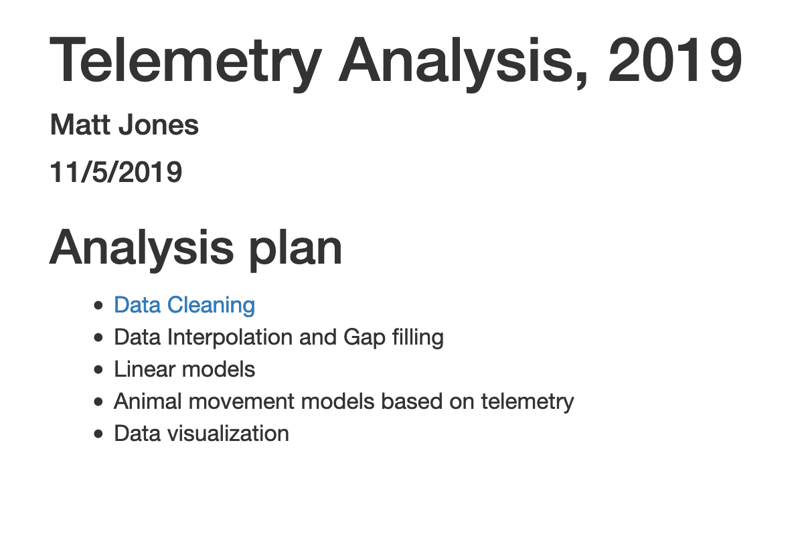
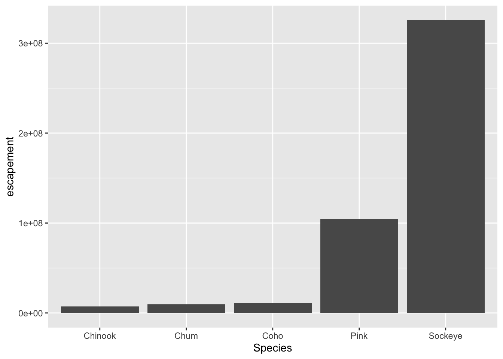
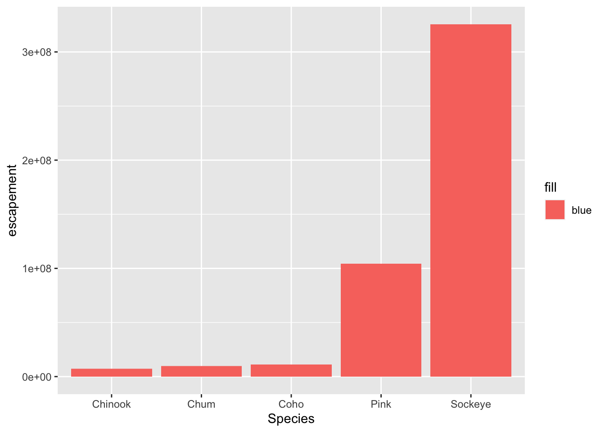
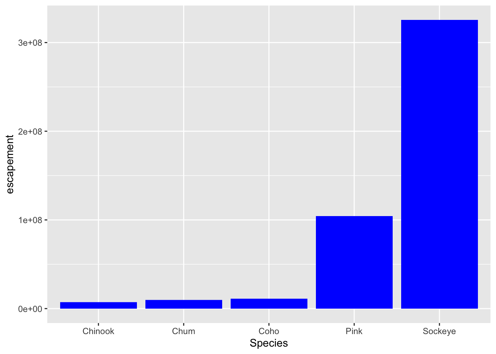
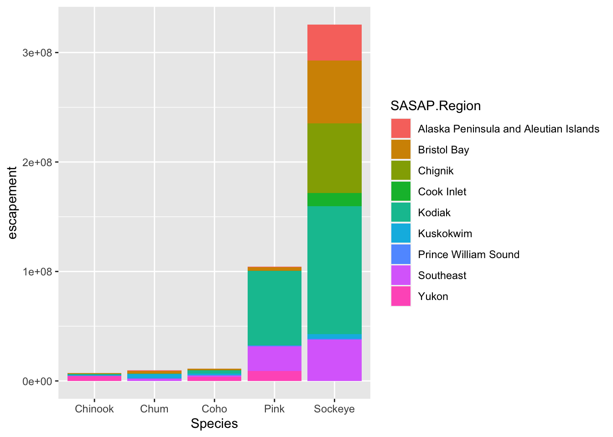
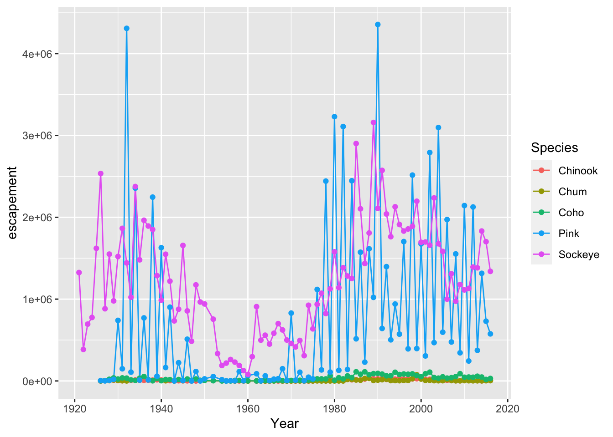
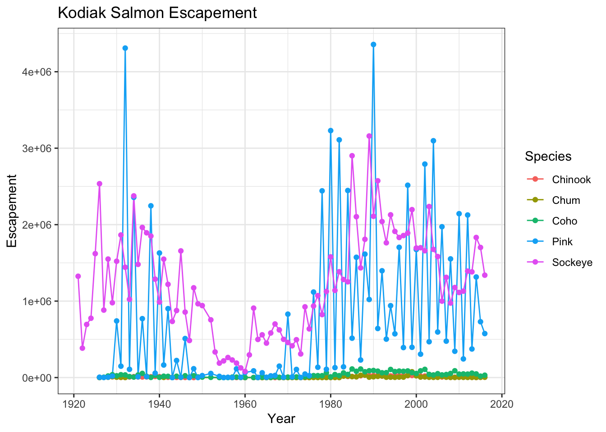
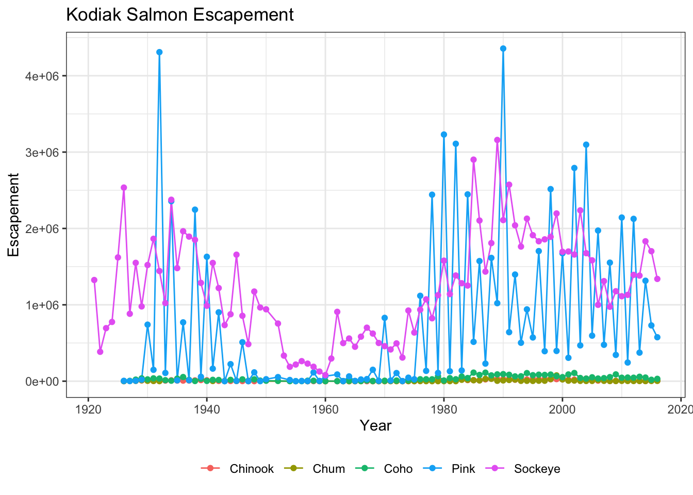
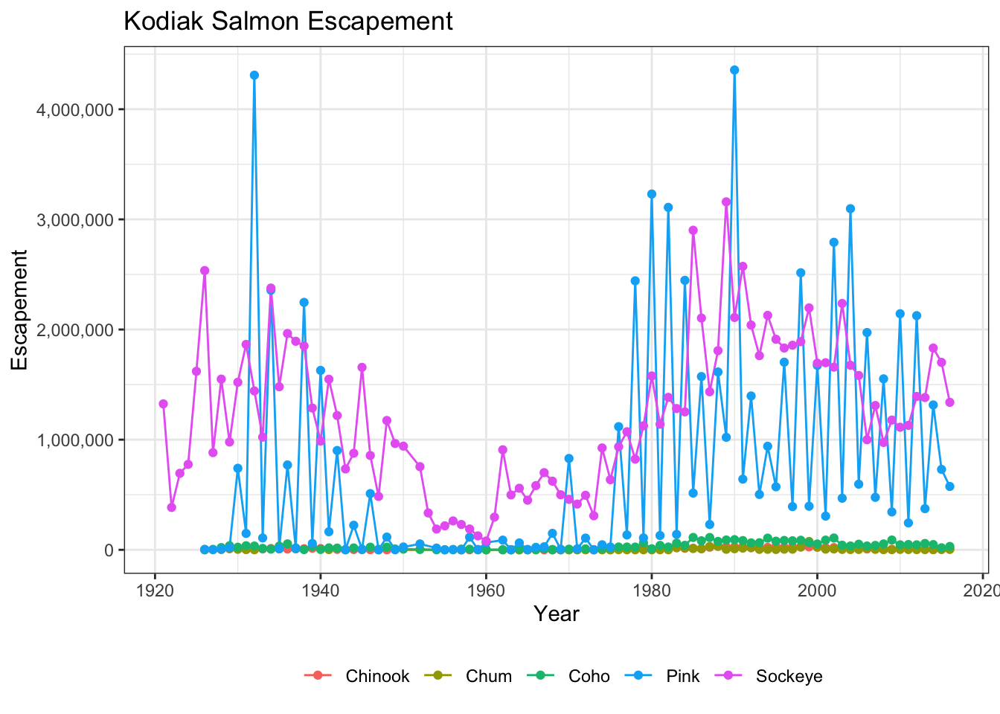
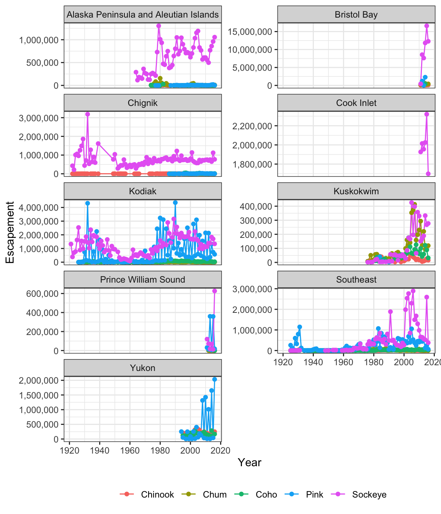

9 Data Visualization and Publishing to the Web
9.1 Publishing Analyses to the Web
9.1.1 Learning Objectives
In this lesson, you will learn:
- How to use git, GitHub (+Pages), and (R)Markdown to publish an analysis to the web
9.1.2 Introduction
Sharing your work with others in engaging ways is an important part of the scientific process. So far in this course, we’ve introduced a small set of powerful tools for doing open science:
- R and its many packages
- RStudio
- git
- GiHub
- RMarkdown
RMarkdown, in particular, is amazingly powerful for creating scientific reports but, so far, we haven’t tapped its full potential for sharing our work with others.
In this lesson, we’re going to take an existing GitHub repository and turn it into a beautiful and easy to read web page using the tools listed above.
9.1.3 A Minimal Example
- Use your existing
training_usernamerepository - Add a new file at the top level called
index.Rmd. The easiest way to do this is through the RStudio menu. Choose File -> New File -> RMarkdown… This will bring up a dialog box. You should create a “Document” in “HTML” format. These are the default options. Be sure to use the exact capitalization (lower case ‘index’) as different operating systems handle capitalization differently and it can interfere with loading your web page later. - Open
index.Rmd(if it isn’t already open) - Press Knit
- Observe the rendered output
- Notice the new file in the same directory
index.html. - This is our RMarkdown file rendered as HTML (a web page)
- Commit your changes (to both index.Rmd and index.html) and push to GitHub
- Open your web browser to the GitHub.com page for your repository
- Go to Settings > GitHub Pages and turn on GitHub Pages for the
mainbranch
Now, the rendered website version of your repo will show up at a special URL.
GitHub Pages follows a convention like this:

github pages url pattern
Note that it will no longer be at github.com but github.io
- Go to https://{username}.github.io/{repo_name}/ (Note the trailing
/) Observe the awesome rendered output
Now that we’ve successfully published a web page from an RMarkdown document, let’s make a change to our RMarkdown document and follow the steps to actually publish the change on the web:
- Go back to our
index.Rmd - Delete all the content, except the YAML frontmatter
- Type “Hello world”
- Commit, push
- Go back to https://{username}.github.io/{repo_name}/
9.1.4 Exercise: Sharing your work
RMarkdown web pages are a great way to share work in progress with your colleagues. To do so simply requires thinking through your presentation so that it highlights the workflow to be reviewed. You can also include multiple pages and build a simple web site for walking through your work that is accessible to people who aren’t all set up to open your content in R. In this exercise, we’ll publish another RMarkdown page, and create a table of contents on the main page to guide people to the main page.
First, in your training repository, create a new RMarkdown file that describes some piece of your work and note the name. I’ll use an RMarkdown named data-cleaning.Rmd.
Once you have an RMarkdown created, Knit the document which will create the HTML version of the file, which in this case will be named data-cleaning.html.
Now, return to editing your index.Rmd file from the beginning of this lesson. The index file represents the ‘default’ file for a web site, and is returned whenever you visit the web site but don’t specify an explicit file to be returned. Let’s modify the index page, adding a bulleted list, and in that list, include a link to the new markdown page that we created:
## Analysis plan
- [Data Cleaning](data-cleaning.html)
- Data Interpolation and Gap filling
- Linear models
- Animal movement models based on telemetry
- Data visualizationCommit and push the web page to GitHub. Now when you visit your web site, you’ll see the table of contents, and can navigate to the new data cleaning page.

9.2 Publication Graphics
9.2.1 Learning Objectives
In this lesson, you will learn:
- The basics of the
ggplot2package to create static plots - How to use
ggplot2’s theming abilities to create publication-grade graphics - The basics of the
leafletpackage to create interactive maps
9.2.2 Overview
ggplot2 is a popular package for visualizing data in R. From the home page:
ggplot2 is a system for declaratively creating graphics, based on The Grammar of Graphics. You provide the data, tell ggplot2 how to map variables to aesthetics, what graphical primitives to use, and it takes care of the details. It’s been around for years and has pretty good documentation and tons of example code around the web (like on StackOverflow). This lesson will introduce you to the basic components of working with ggplot2.
ggplot vs base vs lattice vs XYZ…
R provides many ways to get your data into a plot. Three common ones are,
- “base graphics” (
plot(),hist(), etc`) - lattice
- ggplot2
All of them work! I use base graphics for simple, quick and dirty plots. I use ggplot2 for most everything else. ggplot2 excels at making complicated plots easy and easy plots simple enough.
Setup
Open a new RMarkdown document and remove the filler text.
First, let’s load the packages we’ll need:
library(leaflet)
library(dplyr)
library(tidyr)
library(ggplot2)
library(DT)
library(scales) # install.packages("scales")Load the data table directly from the KNB Data Repository, if it isn’t already present on your local computer. This technique only downloads the file if you need it.
data_url <- "https://knb.ecoinformatics.org/knb/d1/mn/v2/object/urn%3Auuid%3Af119a05b-bbe7-4aea-93c6-85434dcb1c5e"
esc <- tryCatch(
read.csv("data/escapement.csv"),
error=function(cond) {
message(paste("Escapement file does not seem to exist, so get it from the KNB."))
esc <- read.csv(url(data_url, method = "libcurl"))
return(esc)
}
)
head(esc)Challenge
Now that we have the data loaded, use your dplyr and tidyr skills to calculate annual escapement by species and region.
Hint: try to use separate to extract the year, month, and day from the date column.
Here is the solution:
annual_esc <- esc %>%
separate(sampleDate, c("Year", "Month", "Day"), sep = "-") %>%
mutate(Year = as.numeric(Year)) %>%
group_by(Species, SASAP.Region, Year) %>%
summarize(escapement = sum(DailyCount)) %>%
filter(Species %in% c("Chinook", "Sockeye", "Chum", "Coho", "Pink"))## `summarise()` has grouped output by 'Species', 'SASAP.Region'.
## You can override using the `.groups` argument.head(annual_esc)## # A tibble: 6 × 4
## # Groups: Species, SASAP.Region [1]
## Species SASAP.Region Year escapement
## <chr> <chr> <dbl> <int>
## 1 Chinook Alaska Peninsula and Aleutian Islands 1974 1092
## 2 Chinook Alaska Peninsula and Aleutian Islands 1975 1917
## 3 Chinook Alaska Peninsula and Aleutian Islands 1976 3045
## 4 Chinook Alaska Peninsula and Aleutian Islands 1977 4844
## 5 Chinook Alaska Peninsula and Aleutian Islands 1978 3901
## 6 Chinook Alaska Peninsula and Aleutian Islands 1979 10463The chunck above used a lot of the dplyr commands that we’ve used, and some that are new. The separate function is used to divide the sampleDate column up into Year, Month, and Day columns, and then we use group_by to indicate that we want to calculate our results for the unique combinations of species, region, and year. We next use summarize to calculate an escapement value for each of these groups. Finally, we use a filter and the %in% operator to select only the salmon species.
9.2.3 Static figures using ggplot2
Every graphic you make in ggplot2 will have at least one aesthetic and at least one geom (layer). The aesthetic maps your data to your geometry (layer). Your geometry specifies the type of plot we’re making (point, bar, etc.).
Now, let’s plot our results using ggplot. ggplot uses a mapping aesthetic (set using aes()) and a geometry to create your plot. Additional geometries/aesthetics and theme elements can be added to a ggplot object using +.
ggplot(annual_esc,
aes(x = Species, y = escapement)) +
geom_col()
What if we want our bars to be blue instead of gray? You might think we could run this:
ggplot(annual_esc,
aes(x = Species, y = escapement,
fill = "blue")) +
geom_col()
Why did that happen?
Notice that we tried to set the fill color of the plot inside the mapping aesthetic call. What we have done, behind the scenes, is create a column filled with the word “blue” in our dataframe, and then mapped it to the fill aesthetic, which then chose the default fill color of red.
What we really wanted to do was just change the color of the bars. If we want do do that, we can call the color option in the geom_bar function, outside of the mapping aesthetics function call.
ggplot(annual_esc,
aes(x = Species, y = escapement)) +
geom_col(fill = "blue")
What if we did want to map the color of the bars to a variable, such as region.
ggplot is really powerful because we can easily get this plot to visualize more aspects of our data.
ggplot(annual_esc,
aes(x = Species, y = escapement,
fill = SASAP.Region)) +
geom_col()
Aside
ggplot2 and the pipe operator
Just like in dplyr and tidyr, we can also pipe a data.frame directly into the first argument of the ggplot function using the %>% operator.
Let’s look at an example using a different geometry. Here, we use the pipe operator to pass in a filtered version of annual_esc, and make a line plot with points at each observation.
annual_esc %>%
filter(SASAP.Region == "Kodiak") %>%
ggplot(aes(x = Year, y = escapement, color = Species)) +
geom_line() +
geom_point()
This can certainly be convenient, especially for cases like the above, but use it carefully! Combining too many data-tidying or subsetting operations with your ggplot call can make your code more difficult to debug and understand.
Setting ggplot themes
Now let’s work on making this plot look a bit nicer. Add a title using ggtitle(), adjust labels using ylab(), and include a built in theme using theme_bw(). There are a wide variety of built in themes in ggplot that help quickly set the look of the plot. Use the RStudio autocomplete theme_ <TAB> to view a list of theme functions.
For clarity in the next section, I’ll save the filtered version of the annual escapement data.frame to it’s own object.
kodiak_esc <- annual_esc %>%
filter(SASAP.Region == "Kodiak")ggplot(kodiak_esc,
aes(x = Year, y = escapement,
color = Species)) +
geom_line() +
geom_point() +
ylab("Escapement") +
ggtitle("Kodiak Salmon Escapement") +
theme_bw()
You can see that the theme_bw() function changed a lot of the aspects of our plot! The background is white, the grid is a different color, etc. There are lots of other built in themes like this that come with the ggplot2 package.
Challenge
Use the RStudio autocomplete, the ggplot2 documentation, a cheatsheet, or good old google to find other built in themes. Pick out your favorite one and add it to your plot.
The built in theme functions change the default settings for many elements that can also be changed invididually using thetheme() function. The theme() function is a way to further fine-tune the look of your plot. This function takes MANY arguments (just have a look at ?theme). Luckily there are many great ggplot resources online so we don’t have to remember all of these, just google “ggplot cheatsheet” and find one you like.
Let’s look at an example of a theme call, where we change the position of our plot above from the right side to the bottom, and remove the title from the legend.
ggplot(kodiak_esc,
aes(x = Year, y = escapement,
color = Species)) +
geom_line() +
geom_point() +
ylab("Escapement") +
ggtitle("Kodiak Salmon Escapement") +
theme_bw() +
theme(legend.position = "bottom",
legend.title = element_blank())
Note that the theme() call needs to come after any built in themes like theme_bw() are used. Otherwise, theme_bw() will likely override any theme elements that you changed using theme().
You can also save the result of a series of theme() function calls to an object to use on multiple plots. This prevents needing to copy paste the same lines over and over again!
my_theme <- theme_bw() +
theme(legend.position = "bottom",
legend.title = element_blank())ggplot(kodiak_esc,
aes(x = Year,
y = escapement,
color = Species)) +
geom_line() +
geom_point() +
ylab("Escapement") +
ggtitle("Kodiak Salmon Escapement") +
my_theme
Challenge
Using whatever method you like, figure out how to rotate the x-axis tick labels to a 45 degree angle.
Smarter tick labels using scales
Fixing tick labels in ggplot can be super annoying. The y-axis labels in the plot above don’t look great. We could manually fix them, but it would likely be tedious and error prone.
The scales package provides some nice helper functions to easily rescale and relabel your plots. Here, we use scale_y_continuous from ggplot2, with the argument labels, which is assigned to the function name comma, from the scales package. This will format all of the labels on the y-axis of our plot with comma-formatted numbers.
ggplot(kodiak_esc,
aes(x = Year,
y = escapement,
color = Species)) +
geom_line() +
geom_point() +
scale_y_continuous(labels = comma) +
ylab("Escapement") +
ggtitle("Kodiak Salmon Escapement") +
my_theme
9.2.3.1 Saving plots
Saving plots using ggplot is easy! The ggsave function will save either the last plot you created, or any plot that you have saved to a variable. You can specify what output format you want, size, resolution, etc.
ggsave("kodiak_esc.png", width = 3, height = 3, units = "in")Creating multiple plots
What if we wanted to generate a plot for every region? A fast way to do this uses the function facet_wrap(). This function takes a mapping to a variable using the syntax ~variable_name. The ~ (tilde) is a model operator which tells facet_wrap to model each unique value within variable_name to a facet in the plot.
The default behaviour of facet wrap is to put all facets on the same x and y scale. You can use the scales argument to specify whether to allow different scales between facet plots. Here, we free the y scale. You can also specify the number of columns using the n_col argument.
ggplot(annual_esc,
aes(x = Year,
y = escapement,
color = Species)) +
geom_line() +
geom_point() +
scale_y_continuous(labels = comma) +
facet_wrap(~SASAP.Region, scales = "free_y", ncol = 2) +
ylab("Escapement") +
my_theme
9.2.4 Interactive visualization using leaflet and DT
Tables
Now that we know how to make great static visualizations, lets introduce two other packages that allow us to display our data in interactive ways. These packages really shine when used with GitHub pages, so at the end of this lesson we will publish our figures to the website we created earlier this lesson.
First let’s show an interactive table of unique sampling locations using DT.
Write a data.frame containing unique sampling locations with no missing values using two new functions from dplyr and tidyr: distinct() and drop_na().
locations <- esc %>%
distinct(Location, Latitude, Longitude) %>%
drop_na()And display it as an interactive table using datatable() from the DT package.
datatable(locations)Maps
Similar to ggplot2, you can make a basic leaflet map using just a couple lines of code. Note that unlike ggplot2, the leaflet package uses pipe operators (%>%) and not the additive operator (+).
The addTiles() function without arguments will add base tiles to your map from OpenStreetMap. addMarkers() will add a marker at each location specified by the latitude and longitude arguments. Note that the ~ symbol is used here to model the coordinates to the map (similar to facet_wrap in ggplot).
leaflet(locations) %>%
addTiles() %>%
addMarkers(lng = ~Longitude,
lat = ~Latitude,
popup = ~ Location)You can also use leaflet to import Web Map Service (WMS) tiles. Here is an example that utilizes the General Bathymetric Map of the Oceans (GEBCO) WMS tiles. In this example, we also demonstrate how to create a more simple circle marker, the look of which is explicitly set using a series of style-related arguments..
leaflet(locations) %>%
addWMSTiles("https://www.gebco.net/data_and_products/gebco_web_services/web_map_service/mapserv?request=getmap&service=wms&BBOX=-90,-180,90,360&crs=EPSG:4326&format=image/jpeg&layers=gebco_latest&width=1200&height=600&version=1.3.0",
layers = 'GEBCO_LATEST',
attribution = "Imagery reproduced from the GEBCO_2022 Grid, WMS 1.3.0 GetMap, www.gebco.net") %>%
addCircleMarkers(lng = ~Longitude,
lat = ~Latitude,
popup = ~ Location,
radius = 5,
# set fill properties
fillColor = "salmon",
fillOpacity = 1,
# set stroke properties
stroke = T,
weight = 0.5,
color = "white",
opacity = 1)Leaflet has a ton of functionality that can enable you to create some beautiful, functional maps with relative ease. Here is an example of some we created as part of the SASAP project, created using the same tools we showed you here. This map hopefully gives you an idea of how powerful the combination of RMarkdown and GitHub pages can be.
9.2.5 Resources
- Lisa Charlotte Rost. (2018) Why not to use two axes, and what to use instead: The case against dual axis charts